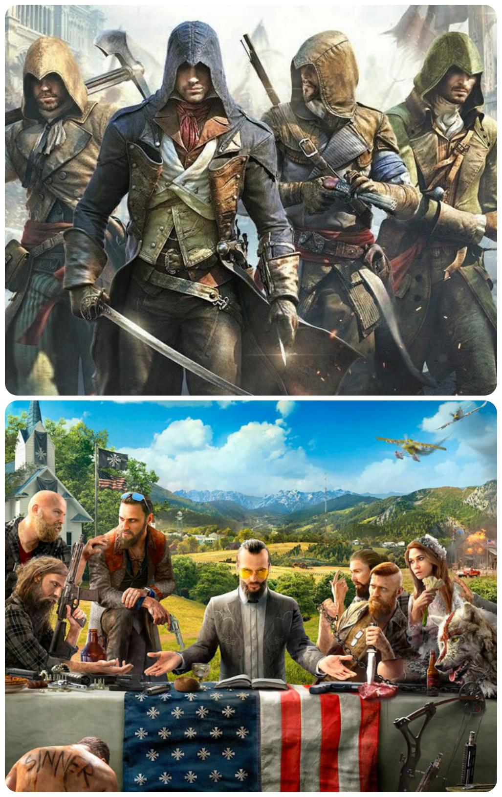

Las ofertas de ps plus no paran, esta semana nos ofrecen dos opciones increibles por tan solo 8.99 dolares.
Assassin's Creed Unity es un videojuego de ficción histórica desarrollado por Ubisoft. El juego fue lanzado en Norteamérica el 11 de noviembre de 2014 y en Europa el 13 de noviembre de 2014.1 Es el primer juego de la serie lanzado exclusivamente para las consolas de la octava generación y el primero en introducir el modo multijugador cooperativo
Algunos puntos a favor del juego son
Por otro lado, Far Cry 5 es un videojuego de acción-aventura en primera persona desarrollado por Ubisoft Montreal y publicado por Ubisoft para PlayStation 4, Xbox One y Microsoft Windows. Es la undécima entrega de la serie Far Cry. Su lanzamiento se produjo el 27 de marzo de 2018.
Algunos puntos a favor son
Atención: Esta página web es solo de práctica.